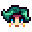

여행 카트
| 여행 카트 | |
 | |
| 여는시간: | 오전 6시 - 오후 8시 까지 금요일, 일요일 야시장 시, 오후 5시 - 오전 2:00 |
| 휴무일: | 월요일 ~ 목요일, 토요일 |
| 주소: | 잉걸불 수액 숲 |
| 거주자: |  행상인 |
여행 카트는 농장 남쪽, 잉걸불 수액 숲에 금요일과 일요일에 나타나는 상점입니다. 야시장(겨울 15~17일) 동안은 매일 나타납니다.
카트는 페즈 모자와 안경을 쓴 돼지가 끌고 있습니다. 돼지에게 말을 걸면 플레이어에게 꿀꿀거립니다. 마우스 우클릭으로 돼지를 누르면 꿀꿀 소리가 납니다. 야시장 동안, 돼지는 카트 뒤의 튜브 안에 떠있습니다.
상인은 임의의 아이템을 한정된 수량(각각 1~5개)을 판매합니다. 현재 계절 외의 물건도 판매하고 있어 꾸러미 완성에 도움이 됩니다.
여행 카트의 가격은 방문할 때마다 제각각입니다. 보통은 꽤 부풀린 가격이지만 일반 가격보다 싼 물건이 나올 때도 있습니다.
상인의 품목은 10개의 아이템에 1개의 가구가 있습니다. 추가로 "특별한 물건"도 판매합니다. 품목은 행상인이 나타날 때마다 달라집니다.
특별한 품목
커피콩과 희귀한 씨앗은 일반 품목으로 아무계절에나 등장 할 수도 있습니다.
| 아이템 | 판매가격 | 계절 | 비고 | |
|---|---|---|---|---|
| 희귀한 씨앗 | 100% 확률로 등장 10% 확률로 5개; 90% 확률로 1개. | |||
| 희귀한 허수아비(8개 중 4) | 40% 확률로 등장. | |||
| 커피콩 | 아무때나 | 25% 확률로 등장. | ||
| 결혼 반지 제작법 | 아무때나 | 멀티플레이: 구매하기 전까지 100% 확률. 싱글플레이: 나타나지 않습니다. | ||
일반 품목
여행 카트에서 보이지 않는 아이템은 팔고 있지 않는다는 뜻입니다. 여행 카트에서 판매하는 아이템은 전부 일반 품질입니다.
요리
| 아이템 | 가격 |
|---|---|
| 녹조류 스프 | |
| 아티초크 소스 | |
| 콩 스튜 | |
| 블랙베리 코블러 | |
| 블루베리 타르트 | |
| 빵 | |
| 브루쉐타 | |
| 깜짝잉어 | |
| 치즈 콜리플라워 | |
| 초콜릿 케이크 | |
| 차우더 | |
| 코울슬로 | |
| 완벽한 아침 | |
| 쿠키 | |
| 게살 케이크 | |
| 크랜베리 캔디 | |
| 우럭 튀김 | |
| 가지 파마산 | |
| 에스카르고 | |
| 청나래고사리 리조또 | |
| 생선 스튜 | |
| 생선 타코 | |
| 오징어튀김 | |
| 장어튀김 | |
| 계란 프라이 | |
| 버섯구이 | |
| 과일 샐러드 | |
| 맛탕 | |
| 해시브라운 | |
| 아이스크림 | |
| 가재 비스크 | |
| 행운의 점심 | |
| 마키 롤 | |
| 메이플 바 | |
| 오믈렛 | |
| 창백한 죽 | |
| 팬케이크 | |
| 설탕당근 스프 | |
| 페퍼 파퍼 | |
| 핑크 케이크 | |
| 피자 | |
| 자두 푸딩 | |
| 양귀비씨 머핀 | |
| 호박 파이 | |
| 호박죽 | |
| 무 샐러드 | |
| 붉은 정식 | |
| 대황 파이 | |
| 라이스 푸딩 | |
| 구운 헤이즐넛 | |
| 뿌리채소 모음 | |
| 샐러드 | |
| 회 | |
| 새우 칵테일 | |
| 스파게티 | |
| 매콤한 장어 | |
| 야채 볶음 | |
| 수상한 롤 | |
| 요리용 속 | |
| 슈퍼 건강식 | |
| 생존형 버거 | |
| 똠카 스프 | |
| 또띠아 | |
| 트리플 샷 에스프레소 | |
| 송어 스프 | |
| 야채의 메들리 |
작물 & 채집
| 아이템 | 가격 |
|---|---|
| 아마란스 | |
| 아티초크 | |
| 사탕무 | |
| 청경채 | |
| 콜리플라워 | |
| 옥수수 | |
| 가지 | |
| 청나래고사리 | |
| 마늘 | |
| 홉 | |
| 케일 | |
| 파스닙 | |
| 감자 | |
| 호박 | |
| 무 | |
| 붉은 양배추 | |
| 토마토 | |
| 가공되지 않은 쌀 | |
| 밀 | |
| 참마 | |
| 사과 | |
| 살구 | |
| 블랙베리 | |
| 선인장 열매 | |
| 체리 | |
| 코코넛 | |
| 크랜베리 | |
| 수정 과일 | |
| 포도 | |
| 매운 고추 | |
| 오렌지 | |
| 복숭아 | |
| 석류 | |
| 대황 | |
| 새먼베리 | |
| 백량금 | |
| 딸기 | |
| 야생 자두 | |
| 푸른 재즈 | |
| 요정장미 | |
| 양귀비 | |
| 여름별꽃 | |
| 해바라기 | |
| 스위트피 | |
| 튤립 | |
| 동굴 당근 | |
| 살구버섯 | |
| 흔한 버섯 | |
| 수선화 | |
| 민들레 | |
| 헤이즐넛 | |
| 호랑가시나무 열매 | |
| 리크 | |
| 곰보버섯 | |
| 보라색 버섯 | |
| 붉은 버섯 | |
| 수액 | |
| 눈마 | |
| 파 | |
| 야생 고추냉이 | |
| 겨울뿌리 |
씨앗 & 비료
| 아이템 | 가격 |
|---|---|
| 기본 비료 | |
| 기본 보습 토양 | |
| 디럭스 성장 촉진제 | |
| 고급 비료 | |
| 고급 보습 토양 | |
| 성장 촉진제 | |
| 도토리 | |
| 단풍 씨앗 | |
| 솔방울 | |
| 사과나무 묘목 | |
| 살구나무 묘목 | |
| 체리나무 묘목 | |
| 오렌지나무 묘목 | |
| 복숭아나무 묘목 | |
| 석류나무 묘목 | |
| 차나무 묘목 | |
| 아마란스 씨앗 | |
| 고대 씨앗 | |
| 아티초크 씨앗 | |
| 콩 종자 | |
| 사탕무 씨앗 | |
| 블루베리 씨앗 | |
| 청경채 씨앗 | |
| 콜리플라워 씨앗 | |
| 커피콩 | |
| 옥수수 씨앗 | |
| 크랜베리 씨앗 | |
| 가지 씨앗 | |
| 요정장미 씨앗 | |
| 가을 씨앗 모음 | |
| 마늘 씨앗 | |
| 포도 종자 | |
| 홉 종자 | |
| 재즈 씨앗 | |
| 케일 씨앗 | |
| 멜론 씨앗 | |
| 파스닙 씨앗 | |
| 고추 씨앗 | |
| 양귀비 씨앗 | |
| 감자 씨앗 | |
| 호박 씨앗 | |
| 무 씨앗 | |
| 희귀한 씨앗 | |
| 붉은 양배추 씨앗 | |
| 대황 씨앗 | |
| 쌀 새싹 | |
| 여름별꽃 씨앗 | |
| 봄 씨앗 모음 | |
| 스타프루트 씨앗 | |
| 여름 씨앗 모음 | |
| 해바라기 씨앗 | |
| 토마토 씨앗 | |
| 튤립 구근 | |
| 밀 씨앗 | |
| 겨울 씨앗 모음 | |
| 참마 씨앗 |
생선 & 해변 채집
| 아이템 | 가격 |
|---|---|
| 조자 콜라 | |
| 날개다랑어 | |
| 멸치 | |
| 도미 | |
| 눈동자개 | |
| 잉어 | |
| 메기 | |
| 피라미 | |
| 만새기 | |
| 장어 | |
| 가자미 | |
| 귀신물고기 | |
| 넙치 | |
| 청어 | |
| 큰입우럭 | |
| 범노래미 | |
| 자정 잉어 | |
| 문어 | |
| 굴 | |
| 농어 | |
| 강꼬치고기 | |
| 복어 | |
| 무지개송어 | |
| 숭어 | |
| 붉은 퉁돔 | |
| 연어 | |
| 도루묵 | |
| 전갈 잉어 | |
| 해삼 | |
| 전어 | |
| 작은입우럭 | |
| 오징어 | |
| 철갑상어 | |
| 개복치 | |
| 슈퍼해삼 | |
| 타이거 송어 | |
| 틸라피아 | |
| 참치 | |
| 월아이 | |
| 숲고기 |
장인 제작품
| 아이템 | 가격 |
|---|---|
| 맥주 | |
| 캐비아 | |
| 옷감 | |
| 오리 마요네즈 | |
| 녹차 | |
| 벌꿀 | |
| 젤리 | |
| 주스 | |
| 벌꿀 술 | |
| 페일 에일 | |
| 피클 | |
| 와인 |
동물 생산품
| 아이템 | 가격 |
|---|---|
| 양털 | |
| 오리알 | |
| 큰 달걀 (흰색, 갈색) | |
| 큰 우유 | |
제작
| 아이템 | 가격 |
|---|---|
| 폭탄 | |
| 벽돌 바닥 | |
| 체리 폭탄 | |
| 조약돌 길 | |
| 수정 바닥 | |
| 수정 길 | |
| 울타리 문 | |
| 자갈 길 | |
| 철 울타리 | |
| 생명의 영약 | |
| 거대 폭탄 | |
| 마늘즙 | |
| 고급 스프링클러 | |
| 스프링클러 | |
| 디딤돌 길 | |
| 돌 울타리 | |
| 돌 바닥 | |
| 짚 바닥 | |
| 오래된 바닥 | |
| 나무 울타리 | |
| 나무 바닥 | |
| 나무 길 |
자원
| 아이템 | 가격 |
|---|---|
| 석탄 | |
| 구리광석 | |
| 금 주괴 | |
| 금광석 | |
| 이리듐 주괴 | |
| 이리듐광석 | |
| 철 주괴 | |
| 철광석 | |
| 정제된 석영 | |
| 배터리 팩 | |
| 섬유 | |
| 나무 |
기타
| 아이템 | 가격 |
|---|---|
| 메이플 시럽 | |
| 참나무 수지 | |
| 소나무 타르 |
미끼 & 낚시 도구
| 아이템 | 가격 |
|---|---|
| 미끼 | |
| 자석 | |
| 가시 돋친 낚시바늘 | |
| 코르크 찌 | |
| 꾸며진 회전식 미끼 | |
| 무거운 찌 | |
| 회전식 미끼 | |
| 함정 찌 | |
| 보물사냥꾼 |
가구
모든 가구들은 여행 카트 내에 동일한 확률로 등장합니다(1/146 또는 0.68%). 가격은  250–2,500골드입니다.
250–2,500골드입니다.
보이지 않는 품목은 구매할 수 없다는 뜻입니다.
의자, 벤치 & 쇼파
테이블
|
참나무 테이블 참나무 티 테이블 참나무 엔드 테이블 자작나무 테이블 자작나무 티 테이블 자작나무 엔드 테이블 마호가니 테이블 |
마호가니 티 테이블 마호가니 엔드 테이블 호두나무 테이블 호두나무 티 테이블 호두나무 엔드 테이블 현대 테이블 현대 티 테이블 |
장식용 식물
그림 & 벽 장식
|
|
그 외 가구
붉은 양배추 판매 보장
저장 파일을 생성 할 때 1년차 완성 보장 옵션이 활성화 된 경우, 여행 카트는 카트의 두 번째 잉걸불 수액 숲 방문인 1년 봄 7일과 카트의 30번째 방문인 겨울 16일 야시장 사이에 적어도 한 번 붉은 양배추 씨앗을 판매하도록 보장합니다. 날짜는 저장 파일이 생성될 때 무작위로 선택됩니다. 플레이어가 그날 여행 카트를 확인하지 않거나 씨앗을 구매하지 않더라도 보증은 해당 날짜에만 적용됩니다.[1]
외부 링크
세이브 파일에 접근이 가능한 플레이어는 "Stardew Predictor"를 이용하면 일주일 동안 여행 카트에서 어떤 아이템을 파는지, 야시장에서는 어떤 물건을 파는지 알 수 있습니다. "Stardew Predictor" 주소 : https://mouseypounds.github.io/stardew-predictor/.
버그
- 플레이스토어의 안드로이드 버전에서, 카트에서 아이템을 구매한 뒤 저장하고 메인 화면으로 나갔다가 재접속하면 아이템을 다시 살 수 있습니다. 이 방법을 무한정 사용할 수 있습니다.
주석
- ↑ 게임 코드는 Game1::loadForNewDay에서 Game1.netWorldState.Value.VisitsUntilY1Guarantee를 초기화한 다음 여행 카트 방문 시마다 이를 감소시킵니다. 붉은 양배추 씨앗은 값이 0에 도달하면 보장되며, 이후에는 -1로 감소하여 더 이상 적용되지 않습니다.
연혁
- 1.0: 추가됨.
- 1.1: 커피콩이 판매 목록에 추가됨.
- 1.3: 야시장에도 등장함.
- 1.4: 상시 재고와 똑같은 물건 품목 제거함. 달콤버섯베리, 공허의 달걀, 공허 마요네즈를 상시 재고에서 삭제함. 재고품에 새로운 아이템이 추가됨: 벽돌 바닥, 캐비아, 가자미, 녹차, 자정잉어, 쌀 새싹, 바다 거품 푸딩, 새우 칵테일, 차나무 묘목, 트리플 샷 에스프레소, 가공되지 않은 쌀.
| 건물 | ||
|---|---|---|
| 상인 | 거대한 그루터기 • 대장간 • 마니의 목장 • 마법사의 탑 • 모험가의 길드 • 목공 작업실 • 사막 상인 • 생선 가게 • 섬 상인 • 스타드롭 주점 • 아이스크림 가판대 • 여행 카트 • 오아시스 • 조자마트 • 치의 호두 방 • 카지노 • 폐가 • 피에르네 잡화점 • 하비의 병원 • 화산 드워프 | |
| 거주구 | 강변로 1 • 강변로 2 • 나무집 • 농가 • 레아의 오두막 • 버드나무길 1 • 버드나무길 2 • 산악로 24 • 섬 농가 • 시장님 저택 • 엘리엇의 오두막 • 텐트 • 트레일러 | |
| 농장 건물 | 농사 | 닭장 • 마굿간 • 물고기 연못 • 반려동물용 그릇 • 슬라임 장 • 오두막 • 온실 • 외양간 • 우물 • 저장고 • 풍차 • 헛간 |
| 특수 | 대지의 오벨리스크 • 물의 오벨리스크 • 사막의 오벨리스크 • 섬의 오벨리스크 • 주니모 오두막 • 황금 시계 | |
| 그 외 건물 | 개 집 • 마녀 오두막 • 마을 회관 • 박물관 • 스파 • 영화관 • 조자 물류창고 • 현장 사무소 | |